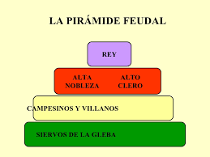

Ya hemos dicho que la característica fundamental del feudalismo, desde el punto de vista social, era la de las relaciones de dependencia. Éstas constituían un complejo entramado en cuya cúspide estaba el rey y en cuya base estaban los campesinos.
Este complejo sistema estaba integrado por grupos cerrados (estamentos) formados por aquellas personas que tenían una misma situación jurídica. Estos estamentos eran:
-
La nobleza.
-
El clero.
-
El campesinado.
La nobleza era la clase privilegiada. Estaba formada por los grandes propietarios, aunque había nobles que no tenían tierras y estaban al servicio de otros (vasallos). Su función principal era la guerra.
El alto clero estaba formado por los nobles sin patrimonio (segundones), ya que ésta era otra forma de conseguir riquezas y poder. Estos miembros del alto clero poseían grandes propiedades que administraban como señores feudales.
Entre los campesinos había diferentes situaciones. Unos pocos trabajaban sus propias tierras. La mayoría trabajaban las tierras del señor. Entre éstos, algunos estaban adscritos a la tierra, no tenía libertad para abandonarla y si ésta cambiaba de dueño, ellos cambiaban de señor. Eran los siervos de la gleba.
